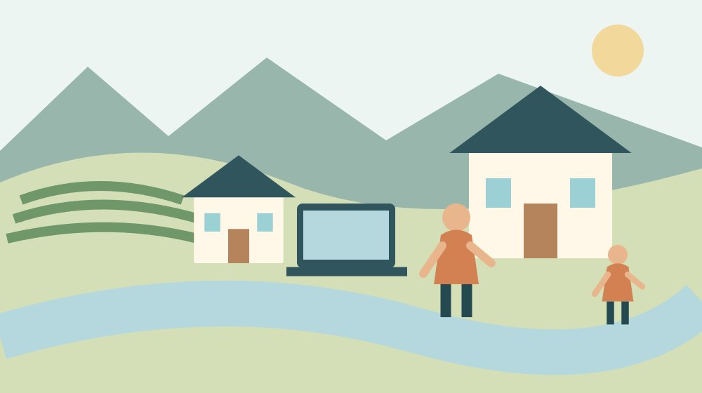

移住・暮らし・データ
森町で二拠点勤務｜全日在宅と出社併用を比較

Q. 全日在宅と週2日出社では、森町に滞在できる日数はどう違う？
A. 森町での二拠点勤務は、勤務先が認める場所と出社日の配置で滞在日数が変わります。全日在宅でも別の住居から働けるとは限りません。国土交通省の2025年度調査の実施率16.8％は全国値です。今日は『森町の滞在先を勤務場所として使えるか』を勤務先への質問に一つ書き、承認後に移動日を入れた予定表で比較します。
森町にいる日の裏で、留守宅を支える人がいる
森町と都市部を行き来する暮らしは、移動する本人だけでは続きません。郵便を受け取る家族、庭や家の状態を気にかける人、日々の地域を支える住民にも時間と負担があります。二拠点で仕事をする計画では、滞在できる日数と同時に、誰が留守の家を見るかを考えたいと思います。
大石浩之（磐田市／不動産業）です。森町の家に関心があっても、都市部の仕事をすぐ辞めるつもりはない。そのような会社員が、全日在宅勤務と出社併用のどちらで暮らしを組めるかを考える記事です。家の価格を比べる前に、勤務できる場所と曜日を確認します。
今日書く質問は一つです。「森町の滞在先を、勤務場所として使えますか」。自宅勤務が認められていても、別の住居や宿泊先が認められるかは勤務先のルール次第です。許可の範囲を確かめず、パソコンを持って行けば仕事になるとは考えないようにします。
二拠点生活全体の準備は、森町で二拠点を持つ前の確認記事でも扱っています。今回は仕事を続ける条件に絞り、滞在日、出社日、移動日を一週間へ置きます。住まいを買うか借りるかは、その予定が成立してから考えても遅くありません。
16.8％は全国の実施率で、毎日在宅の割合ではない
国土交通省は2026年3月24日、令和7年度テレワーク人口実態調査の結果を公表しました。雇用型就業者のうち、直近1年間にテレワークを実施した人の割合は全国で16.8％。前年度比で1.2ポイント増えたと説明しています。2026年9月20日に公表本文を確認しました。
調査は2025年10月に就業者を対象として実施されたWEB調査です。国土交通省は有効サンプル数を40,000人としています。16.8％は全国の集計で、森町の会社や町民だけを集めた数字ではありません。森町でのテレワークの普及率へ読み替えることはできません。
同じ発表には、これまでテレワークをしたことがある雇用型テレワーカーの割合25.2％も載っています。過去の経験を含む数字と、直近1年間の実施率は定義が違います。見出しの数字だけを拾うより、どの期間に何をした人なのかを確認する方が、判断を誤りにくくなります。
意外なのは、直近1年間に実施した人の数字でも、全日在宅で働ける人の割合とは限らないことです。全国で実施率が上がったから、自分の勤務先でも森町から働けるとは言えません。統計は背景として読み、個人の予定は就業ルールと上司・担当部署の回答で組み立てます。

全日在宅なら、まず承認された勤務場所を確かめる
全日在宅勤務を前提に森町へ滞在する場合は、平日の出社がないことと、勤務場所を自由に選べることを分けます。森町の住所を登録する必要があるか、一定期間だけ利用できるか、事前申請が必要かを勤務先へ確認します。会社ごとのルールをこの記事で代わりに決めることはできません。
確認先には、実際に利用する場所と期間を伝えます。「二拠点生活をしたい」だけでは、会社側が何を判断するか分かりません。森町の住居で月曜から金曜まで働きたい、月に一週間を想定している、と予定を具体化すれば、認められる範囲や必要な手続きの話ができます。
勤務の承認が得られても、会議や研修などの臨時出社について確認を残します。何日前に連絡されるか、どの程度の頻度を想定するか、交通費をどう扱うかは、滞在計画に関わる条件です。通常は出社がないという説明だけで、都市側の拠点を使わないと決めないようにします。
私なら、最初の試行では勤務日を一日含む短い滞在から始めたいと考えます。休日に快適だった部屋でも、会議の音、机、椅子、画面の見え方は仕事中に確かめる必要があります。会社が許可した条件の中で、実際の勤務を妨げずに試せる方法を相談します。
週2日出社は、曜日が離れるか連続するかで違う
出社を併用する働き方では、週の出社回数だけで滞在可能日を決められません。火曜と木曜に出社する場合と、火曜と水曜に続けて出社する場合では、森町へ戻れる時点が変わります。勤務先が曜日を選べるかどうかも含めて確認する必要があります。
以下は比較のための仮定です。土日は休みで、出社以外の日は森町での勤務が許可されているとします。移動は勤務時間外に行い、火曜の出社前に月曜夜に都市側へ移動できる条件を置きます。実際の交通機関の運行や、特定企業の制度を示す予定ではありません。
全日在宅の仮例では、前の日曜までに森町へ着き、月曜から日曜まで滞在すれば、その一週間の滞在日は7日です。平日5日は森町で勤務し、土日は休みます。週の途中で臨時出社が入らず、勤務場所の承認が続くことが、この仮例を成り立たせる条件です。
火曜・木曜出社の仮例では、月曜を森町で勤務して夜に都市側へ移動します。火曜から木曜は都市側に滞在し、金曜の勤務後に森町へ戻るとします。この一週間で森町にいる日は月・金・土・日の4暦日ですが、金曜は到着後の時間だけです。丸4日自由に使える意味ではありません。
火曜・水曜出社の仮例では、月曜夜に都市側へ移動し、水曜の勤務後に森町へ戻れるとします。森町にいるのは月・水・木・金・土・日の6暦日で、水曜は到着後だけです。同じ週2日出社でも、曜日を連続させるという条件で滞在のまとまりが変わることを示しています。
| 働き方 | 森町にいる曜日 | 滞在の数え方 |
|---|---|---|
| 全日在宅 | 月～日 | 7日 |
| 火・木に出社 | 月・金・土・日 | 4暦日。金曜は夜の到着後のみ |
| 火・水に出社 | 月・水・木・金・土・日 | 6暦日。水曜は夜の到着後のみ |
比較の要点は「全日在宅は7日、週2出社は何日」と一般化することではありません。到着日や出発日を数に含めたため、日数だけでは生活時間を比較できません。自分の表では到着時刻と出発時刻を書き、丸一日いる日と移動を含む日を分けてください。
勤務時間の外に、移動と家の準備が残る
二拠点勤務の移動は、列車や車に乗っている時間だけでは終わりません。家から駅、駅から森町の滞在先、荷物の準備、到着後の室内確認も予定に入れます。夜に移動する計画なら、翌朝の始業に無理がないかまで確認します。仕事を続けるための予定表だからです。
車で移動する場合は、長時間の勤務後に無理な運転を予定しないようにします。鉄道を利用する場合は、実際の運行日と接続をその都度確かめます。この記事では出発地を固定していないため、一律の所要時間や料金は示しません。出発地と目的地を決めて初めて調べられる数字です。
移動時間を会社の勤務時間として扱えるかは、自己判断せず確認します。移動中に端末を開けることと、勤務として認められることは別です。通話内容や画面を周囲に見聞きされる問題もあるため、業務を行う場所と方法は会社が定める条件に従います。
予定表には、滞在を中止する条件も書きます。臨時出社、体調不良、交通の乱れ、家族の予定などが重なった時に、無理に森町へ行く計画にしないためです。行かない週でも家の管理が止まらないよう、鍵と連絡先、確認を頼む範囲を決めておきます。
良い点：森町との関わりを、完全移住の前に試せる
森町の「二地域居住の促進」は、今の仕事や生活を維持しながら地域に関わる暮らしを紹介しています。町は森町特定居住促進計画と調査・実証の取り組みを公表しています。すぐに完全移住するかどうかだけで選ばず、生活の形を考える入口がある点を私は評価します。
私にとって、二拠点勤務の良さは、勤務を含む普通の日を試せることです。休日の景色だけでなく、平日の買物、昼休みの過ごし方、帰宅する家族との時間を確認できます。ただし勤務先の許可が前提です。町が二地域居住を紹介していても、会社の承認の代わりにはなりません。
出社併用にも、都市側で対面の仕事を続けながら森町へ通う余地があります。全日在宅だけを理想と決めず、仕事に必要な出社と滞在を合わせて組めるかを考えます。出社日の配置を変えられない場合は、その条件を受け入れたうえで短い滞在を試す選択も残せます。
滞在日数が決まったら、森町の二拠点生活費を考える記事と合わせて、二軒分の固定費と往復費を確認します。日数が増えれば必ず割安になるとは限りません。勤務と家族の予定を無理なく続けられるかを、費用と別々に評価します。
注文したい点：留守宅の管理を、家族の善意へ預けない
二拠点勤務で私が気にかけるのは、本人が移動できる日数だけが計画の中心になることです。都市側に残る家族や、森町で家を気にかける人の仕事が見えなければ、負担が偏ります。留守宅の管理と移動の担い手を具体的に決めることが、続けるための条件だと考えます。
家族へ頼む内容は、郵便を受け取ること、室内を確認すること、業者の訪問に立ち会うことなどに分けます。頼まれた人が断れる日や、代わりの方法も決めます。今日できる一歩は、「自分が森町にいる間に、誰の作業が一つ増えるか」を書き、本人へ確認することです。
森町空き家・空き地バンクは、物件情報の提供と利用の流れを案内しています。町は交渉や契約等を行わないと説明しています。バンクに載る家だから、二拠点勤務や長期不在に必要な条件まで整っていると判断することはできません。具体的な利用方法は所有者側と確認します。
私は物件を紹介する際にも、通信や勤務場所の条件を見ないまま「テレワーク向き」と言い切りたくありません。仕事をする部屋、通信回線、長期不在時の管理は物件ごとに違います。家を決める前に、勤務先と貸主側に何を確認するかを書き分けることを勧めます。

通信と部屋は、実際に働く条件で確かめる
森町で働く候補の部屋では、通信回線の利用可否、開通までの期間、業務用端末の接続条件を確認します。町全域で同じ速度やサービスが使えるとは決められません。住所ごとの提供状況を通信事業者へ聞き、勤務先の情報管理上の条件と両方を満たすかを確かめます。
内見では、机を置く位置、電源、会議中の声が漏れる場所、家族の動線を見ます。空いている一室があれば十分とは限りません。冬や夏の室温への対応、仕事が終わった後に端末や書類を保管する場所も、住まいを使う条件として確認したい項目です。
停電や回線障害が起きた場合の連絡方法は、勤務先へ相談します。別の場所へ移ればよいと自己判断しても、その場所からの接続が認められるとは限りません。業務を止める判断と代替手段をあらかじめ確かめ、周辺の施設を自由に勤務場所として使えると想定しないようにします。
家族が同じ家で過ごす場合は、会議の時間や立入りを避けたい場所を共有します。留守宅管理と同じく、在宅している人がいつでも家事をできるという前提にしません。勤務と生活の境目を家族で確認することが、滞在日数を増やす以上に役立つ場合があると私は考えます。
対案・結論：勤務先への一問から予定表をつくる
二拠点勤務の最初の確認は、森町の滞在先を勤務場所にできるかです。勤務先の担当部署や上司へ、住所、利用期間、勤務日、想定する通信環境を伝える準備をします。まだ物件が決まっていなければ、決定前に確認すべき条件を聞くことから始められます。
回答を得たら、出社必須日を一週間の表へ先に置きます。次に、勤務時間外に確保する移動を書きます。最後に、森町で勤務する日と休日を塗り分けます。この記事の7日・4日・6日という仮例を写すのではなく、自分の到着時刻と出発時刻で日数を確かめます。
試行後には、予定と実際に使った時間を比べます。移動、室内の準備、勤務、家の片付け、家族との時間を一度振り返り、続けられない部分を一つ見つけます。試す前に住まいの契約が必要なら、その費用と解約条件も確認し、試行そのものを無理な出費にしないようにします。
全日在宅が認められなくても、森町との関わりがなくなるわけではありません。休日の滞在を続ける、出社のまとまりを見直せる時期に再検討する、といった選択も残ります。私は、今日の確認で不可能な条件が一つ分かることも、住まいを決める前の成果だと考えます。
家族に残す記録：勤務の承認と家の担当を別にする
家族用の記録には、勤務先から認められた場所と期間、出社日、往復予定、家の鍵、留守中の連絡先を残します。仕事の承認記録と家族の役割表は目的が違うため、ひとつの曖昧な予定メモで済ませないようにします。会社の情報を家族へ共有する範囲も、勤務先のルールに従います。
住所の扱いは勤務日数だけで決めません。二拠点生活の住民票を考える記事を参考に、実際の生活に沿って各窓口へ確認します。会社が森町からの勤務を認めたことと、住民票や契約上の手続きが済んだことは別です。
家を空ける期間が延びる場合の連絡方法も記録します。家族へ何を頼み直すか、業者の予定を変えるか、次に自分が確認する日はいつかを残します。地域の人へ鍵や対応を預ける場合も、善意を当然の義務にせず、頼む範囲と費用を相談してください。
大石の視点：二軒目を決める前に、一週間を確かめる
私は、森町の家を持つかどうかを急がせるより、勤務先へ質問できたことを最初の成果にしたいと考えます。まだ決めない状態にも理由があります。勤務の承認、出社日の配置、家族の担当という材料がそろうまで、住まいを決める判断を保留できる余地を残します。
二拠点勤務は、パソコン一台で完成しません。これが今回の私の言い切りです。移動の時間、留守宅の維持費、家族の担い手がそろって初めて続く暮らしになります。森町への関心を長く保つためにも、周りの人の負担を見えないまま増やしたくありません。
一方で、条件を慎重に数えるほど、暮らしの可能性を狭く見せてしまう迷いもあります。だから、最初から完成した二拠点生活を求めず、許可された条件で小さく試す提案にします。今日、勤務先へ確認する一問を書く。その答えを見て、次の一週間を考えればよいと思います。
よくある質問
全国の実施率16.8％は、全日在宅で働く人の割合ですか？
国土交通省の2025年度調査にある16.8％は、雇用型就業者のうち直近1年間にテレワークを実施した人の全国の割合です。毎日テレワークを行う人だけの割合ではなく、森町単独の数値でもありません。この統計から、個別企業が二拠点勤務を認めるかや、森町に何日滞在できるかを判断することはできません。
週2日の出社でも、森町に長く滞在できますか？
出社する曜日を連続させられるか、移動を勤務時間外に確保できるかで変わります。この記事の仮例では、火・木出社と火・水出社を比較していますが、特定企業の運用や実際の交通条件を示すものではありません。勤務場所の承認、臨時出社、出発地と到着地の移動時間をそろえ、自分の予定表で確認してください。
全日在宅の会社なら、先に森町の家を借りてもよいですか？
全日在宅という勤務形態だけでは、森町の別の住居が承認された勤務場所か分かりません。勤務先の就業ルール、情報管理、通信条件、臨時出社を確認してから、物件の利用条件を貸主側へ伝えます。借りる判断を急がず、許可された場所で短い試行を行う方法もあります。不在時の管理と家族の役割も合わせて確認します。

公式情報源
2026年9月20日確認。制度・数値は変更される場合があります。個別の適用は担当窓口へ、税務・契約等の判断は専門家へ確認してください。